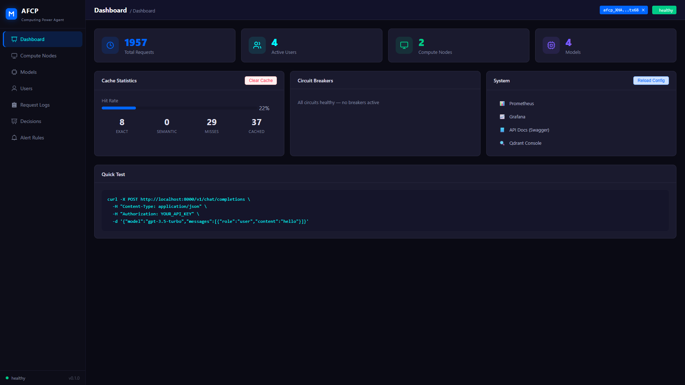
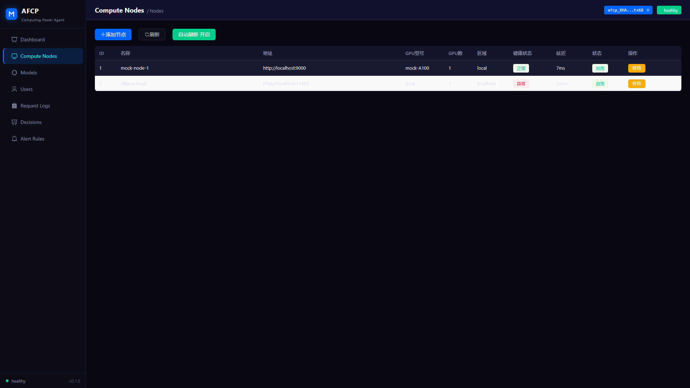
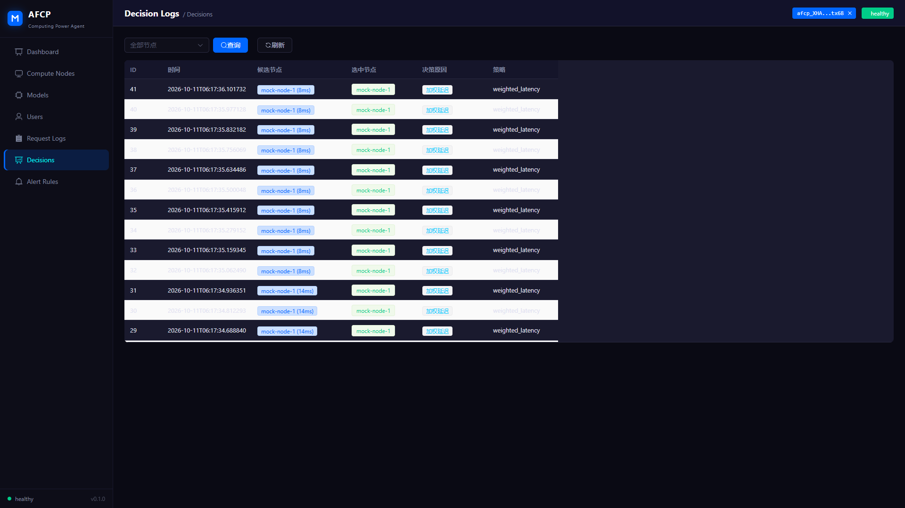
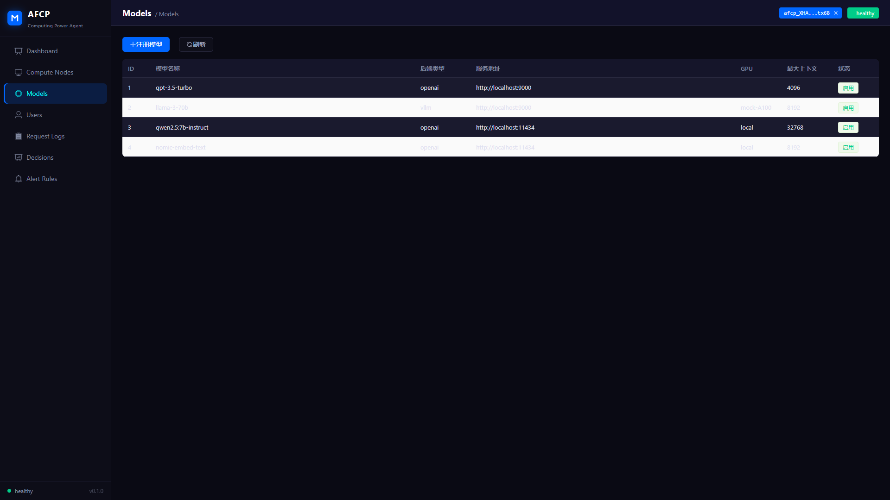

AGENT 工程 · 可完整跑通
AFCP
把散落各处的 GPU 节点收成一个 OpenAI 兼容出口，自动选最快的那台：业务只按 OpenAI 的格式调一次，选节点、重试、限流、记账由网关负责；多一个节点只是多一行注册。

背后的故事
手上有几张卡、几台机器的人，很快会遇到同一堆事：节点跑的是 Ollama / vLLM / SGLang 各不一样，接口互不兼容；谁快谁慢、哪台已经挂了、额度怎么分，全靠人盯；业务侧想换模型，还得为每家引擎各写一套客户端。AFCP 在中间架一层网关：业务只按 OpenAI 的格式调一次，选节点、重试、限流、记账由网关负责。
0次推理请求
0个模型
0个节点
0%缓存命中
平台实拍



项目时间线
v1.0.0
可完整跑通
本地拉起全栈，注册 mock 节点后打通注册 → 选点 → 转发 → 日志 → 缓存整条链路。
路由
多策略调度
加权延迟 / 模型亲和 / 轮询，改 config 热重载即生效，不重启服务。
可运营
三层可观测
Prometheus + Grafana + Loki，Vue 管理台 + Docker Compose 一键部署。
我们学到了什么
- ▸生产环境和本地跑通是两件事
- ▸上线前一定要有监控和回滚方案
- ▸文档写给自己看的，也写给下一届看的